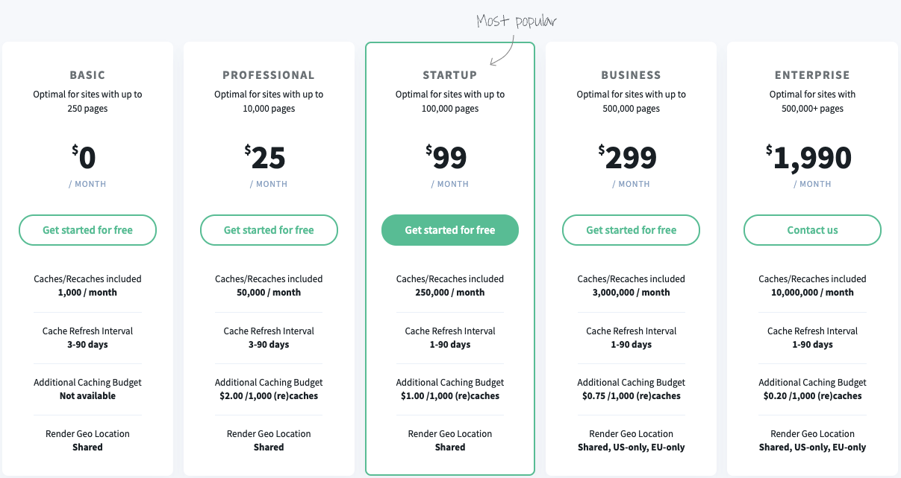
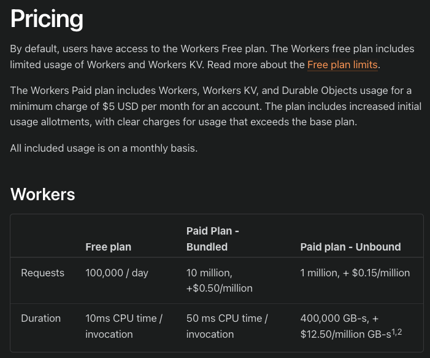
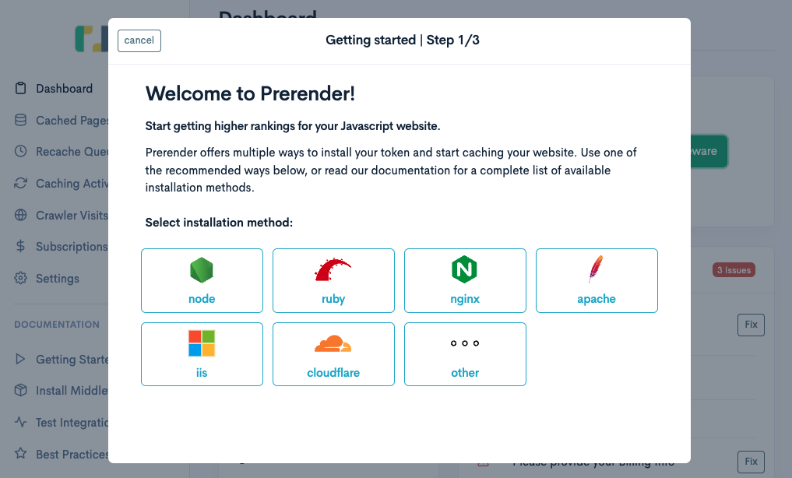
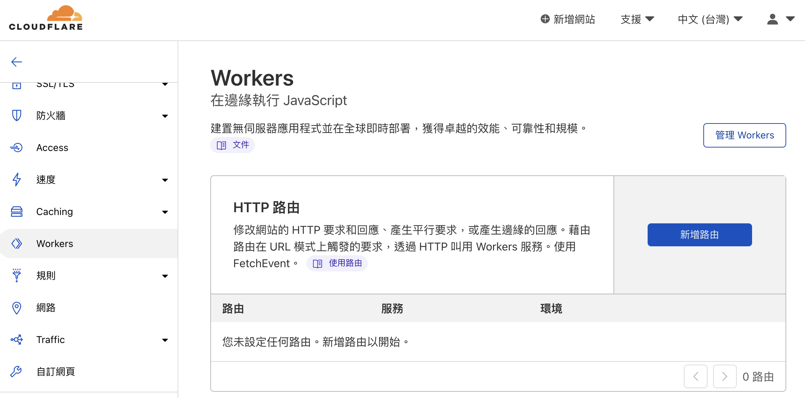
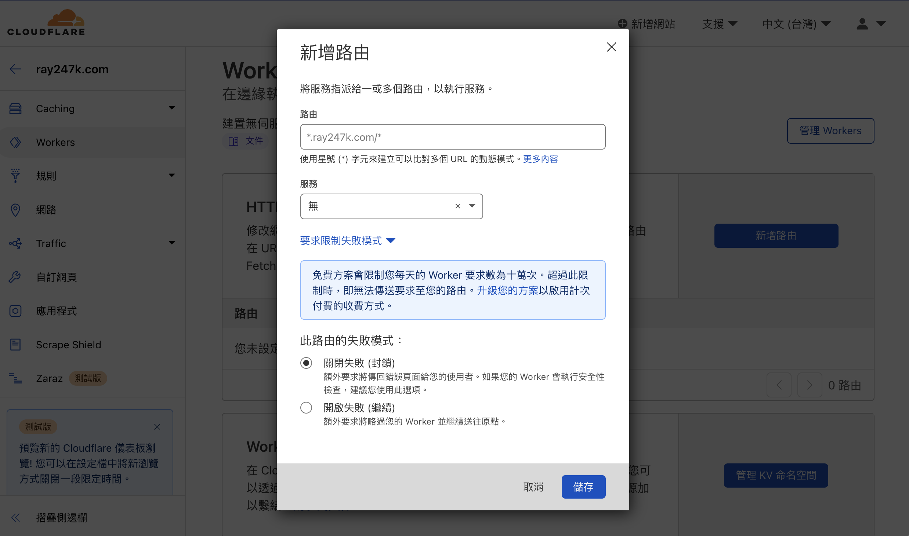

使用 Prerender 為 SPA 增進 SEO
解決 CSR 網頁的 SEO 問題，示範自架與 SaaS 方案

Single Page Application(SPA) 網站使用 Client-Side Rendering (CSR) 來渲染畫面
一開始載入時伺服器只會回傳根元件，透過後續 API 互動取得資料填入
而網站排名的爬蟲，爬到就會是空空的。雖然 Google 聲稱他們的爬蟲會執行 JS，但是其他搜尋引擎不一定會執行
所以透過 Prerender 服務來做到預先渲染給網頁爬蟲，達成搜尋結果最佳化
Prerender
原理是內部起一個 headless 的 chrome 達到預先渲染畫面的效果
以下會介紹兩個 Prerender 的使用方式
- 自架：prerender
- SaaS 服務：Prerender.io
要自建的話要先建一個反向代理，在 request 進來的時候
判斷 user agent，機器人的話就把請求發給自己 host 的 prerender 服務
服務本身有個 headless chrome，所以可以 render 出 HTML 回傳
如果是一般使用者進來就直接轉發前端伺服器，不做渲染
使用 Prerender.io
所提供的 SaaS 服務，就會有所限制
並且超過免費使用的上限就會需要付費，但是就不需要自己管理以及設定服務
而自建的優點則是擁有更多設定上的自由
兩個方案可以依照使用情境評估後自行選擇
若是要使用 Prerender.io
方案，則必須在網站已經上線的情況下才能進行設定
自架
套件：Prerender
說明寫的其實蠻清楚，就是這麼簡單
為了表示誠意，底下還是一步一步示範
1. 安裝
開個資料夾，為了方便我們先取叫prerender
在資料夾內輸入指令：
npm install prerender
就安裝好了
2. 設定
在 prerender 資料夾中新增一個檔案
server.js
const prerender = require('prerender');
const server = prerender();
server.start();
3. 啟動
終端機輸入指令啟動服務
node server.js
服務會啟動在本機的 3000 port
如果你的服務也是啟動在 3000 port，就把 port 錯開
接著在你的前端專案啟動的狀況下開啟終端機，輸入
curl "https://www.google.com.tw/" # 你的 SPA 專案網址
會得到空空一片只有根元件的 DOM，因為取得元件內容的 JS 還沒被執行
這也是 SPA 的 SEO 不好的原因
雖然 Google 聲稱他們的爬蟲會執行 JS，但是其他搜尋引擎不一定會執行
接著就是神奇的時刻了，打開終端機輸入
curl "http://localhost:3000/render?url=https://www.google.com.tw/" # 你的 SPA 專案網址
拿到一大包渲染過後的結果啦！
前面網址是 Prerender 服務的網址，然後參數帶上你的專案網址
就會透過 Prerender 內部啟動的 headless chrome 去渲染畫面再回傳
快取設定
一般情況下，如果你自己起一個 Prerender 服務
則每次進行轉發都會重新渲染畫面，但是實務上我們不需要這麼頻繁的重新渲染
可以藉由設定快取保留渲染結果一段時間
每次請求進來，如果快取還沒過期就直接回傳快取結果
不用重新渲染畫面，可以減少服務本身的附載
使用的快取套件：prerender-memory-cache
1. 安裝
用終端機在剛剛的 prerender 資料夾輸入指令安裝套件
npm install prerender-memory-cache --save
2. 設定
打開剛剛 prerender 的 server.js
在原先檔案的server.start();前加入設定聲明
server.use(require('prerender-memory-cache'))
就是這麼簡單，第二次請求應該會使用快取的結果
3. 參數
我們還可以在 prerender 資料夾下使用終端機輸入來設定參數
快取最大項目數量
export CACHE_MAXSIZE=1000
default: 100
快取存活時間(秒)
export CACHE_TTL=600
default: 60
4. 測試
設定存活時間之後使用終端機去測試
curl "http://localhost:3000/render?url=http://localhost:3030/" # 你的 SPA 專案網址
打完第一次之後，去修改自己專案的一些內容（footer, title 之類）
確認用瀏覽器直接造訪畫面有出現變更
接著再重新使用終端機測試，應該會出現舊的 HTML 內容
這就證明他是使用快取的內容，而不是請求一來就重新渲染
所以剛剛才會建議修改 footer 或是 title，因為比較好確認
線上服務價錢方案
底下範例使用 Cloudflare Workers
設定 Prerender.io 服務
因為專案的前端好像有自己的 Nginx 服務，不想介入太多 不然到時候又變我要負責
而且以前就聽過 Cloudflare Workers 也知道很強大，畢竟就像個 proxy 掛在最前面，所以能做的事情很多
但是從來沒機會使用，剛好用這次機會摸摸看
Prerender.io 價錢方案

Cloudflare workers 價錢方案

設定
進到 prerender 頁面，點擊Install middleware後選擇cloudflare選項

官方已經新增了文件，只要照著文件操作，連不會寫程式的人也可以安心設定了！
照著文件按圖施工就好：Cloudflare Integration
根據提示打開設定檔的範例：prerender/prerender-cloudflare-worker
就會看到範例的index.js，看起來要改的只有API_KEY和PRERENDERED_DOMAINS
- API_KEY：prerender.io 儀表板左上的
Token - PRERENDERED_DOMAINS：等等會拿來設定路由規則的目標網域
建立一個 Cloudflare worker，把剛剛的設定檔貼上去
一般的 Worker 可以使用提供的 playground
玩看看
但是我們使用的是第三方服務，必須經過 Prerender 驗證才會生效
所以在這邊使用 playground 是無法測試的
在設定好 Worker 之後，開啟 Worker 頁籤
選擇新增路由

接著要設定要求限制失敗模式
選擇開啟失敗 (繼續)的話，當請求進來而 Worker 失敗則會直接進到服務內
而關閉失敗 (封鎖)是會噴出錯誤頁面阻止使用者繼續訪問
由於我們不希望在達到免費方案限制的時候網站就無法存取，且不預先渲染內容不影響網站功能
所以選擇讓在失敗時跳過 Worker 直接執行，畢竟只是拿來做 prerender，爬蟲這次爬不到就下次再來也不要緊

路由規則要和你在 Worker 設定的網址一樣
設定完之後要記得回到 Prerender.io
按下一步進行驗證，接著就是等他自己驗證完成囉
通常按下驗證過幾秒驗證結果就會出來了
如果驗證完成後想模擬爬蟲爬取的時候會取得的結果，可以使用
curl -A Googlebot "https://{你線上服務網址}"
這樣可以模擬Googlebot爬蟲得到的結果，因為我們在 Worker 的 nginx 設定檔中有指定特定的 user agent
所以 Cloudflare Worker 會替我們判斷是不是需要轉發給 Prerender.io
服務處理
如果不加上-A Googlebot參數，則不會轉發進行渲染
會回傳一般使用者造訪網頁時的 CSR 結果，也就是未經渲染的網頁內容